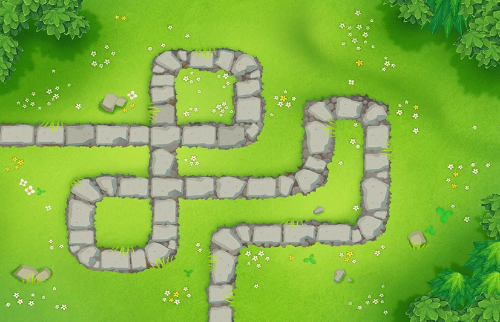

Tracks
In Bloons, the Bloons travel along a path on the various levels, or tracks as they are called. The objective of the game is to prevent the Bloons to get to the end, or else the player will lose lives. Once all the lives are lost, the level is failed and must be restarted.
Different tracks have different obstacles and placements, encouraging different strategies between each of them. Some have object preventing placement, or water, where only water-based towers can be placed, or having very little area to place towers, requiring intense planning for the track. Every track follows the same round order, spawning the same Bloons each round as every other track, allowing players to think ahead in their planning. There are currently 67 tracks in the game, across 4 difficulties: Beginner, Intermediate, Advanced, and Expert.